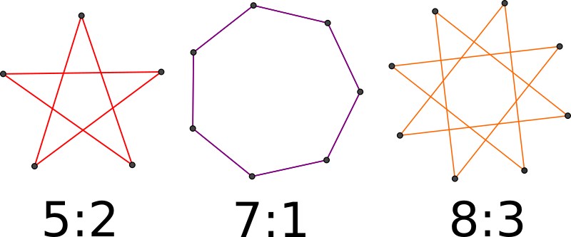
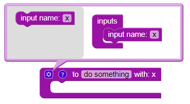
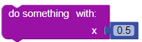
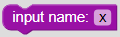

Sterne

Program the turtle:
The turtle must draw a 5:2-Star with line length 10 steps.
Hint: The „star numbers“ determine the turning angle of the turtle. For a 5:2-Star the turtle has to turn  degrees (°). It is recommended that the turtle draws the blue line first.
degrees (°). It is recommended that the turtle draws the blue line first.
Program the turtle:
The turtle must draw two 8:3-Stars. One star has an line length of 10 steps and one star has an line length of 5 steps.
Hint: The „star numbers“ determine the turning angle of the turtle. For a 5:2-Star the turtle has to turn degrees (°).
Use functions to get by with the permitted number of blocks. For further instructions concerning functions and parameters please check SHOW DETAILS. It is recommended that the turtle draws the blue line first.
Details:
You can add a parameter to the function by clicking on the gear symbol:

When using the function you have to pass a parameter:

Program the turtle:
The turtle must draw Stars 9:4, 15:4 and 5:2. All stars have an line length of 10 steps.
Hint: The „star numbers“ determine the turning angle of the turtle. For a 5:2-Star the turtle has to turn degrees (°).
Use functions to get by with the permitted number of blocks. For further instructions concerning functions and parameters please check SHOW DETAILS. It is recommended that the turtle draws the blue line first.
Details:
You can add a parameter to a function by clicking on the gear symbol:
To add two parameters add

twice into the function block. You need to rename at least one variable.
When using the function you have to pass a parameter: